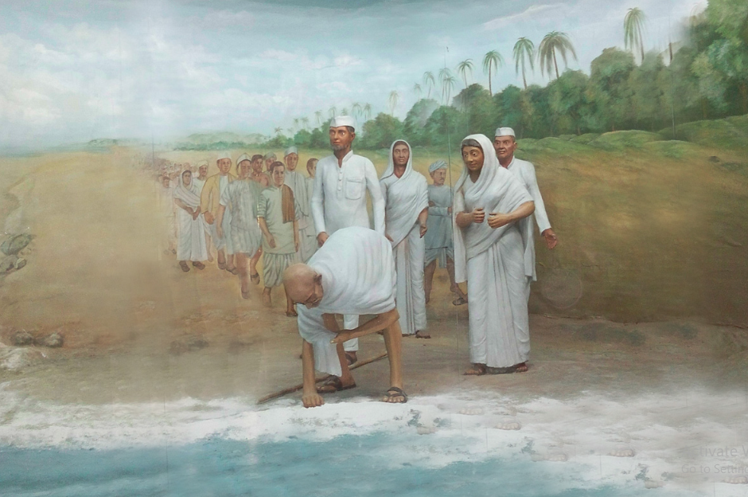

The Salt Satyagraha began on March 12, 1930 where Gandhi ji and his followers walked 240 miles from Sabarmati Ashram to the coastal village of Dandi.
Upon reaching the coast on April 6, Gandhi ji symbolically broke the British salt laws by making salt from seawater.
Features of Salt Satyagraha
The primary feature of the Salt Satyagraha was its symbolic act of defiance against the British monopoly on salt.
By producing salt from seawater at Dandi, Gandhi directly challenged the unjust laws.
The march covered about 240 miles from Sabarmati Ashram to the coastal village of Dandi,
mobilizing numerous supporters and garnering widespread public attention.
The entire movement was marked by strict adherence to nonviolence (ahimsa), despite numerous
provocations by the authorities. This reinforced the moral high ground of the protestors.
It strengthened the Indian National Congress's stature as the principal organization leading the freedom struggle.
Impact of Salt Satyagraha

The Salt Satyagraha,had a profound impact on the Indian independence.
It galvanized mass participation across various sections of Indian society.
It demonstrated the power of nonviolent protest against colonial rule.
Drawbacks of Salt Satyagraha
Despite the non-violent approach, the movement was met with severe repression by British authorities.
Many of the participants, including Gandhi, were arrested, which temporarily diminished the movement's momentum.
Although the Salt March drew significant urban participation and media attention, rural India, which constituted the majority of the population, saw relatively limited direct engagement.
The agrarian population's pressing issues over land and food were not directly addressed by this symbolic act.
The immediate results of the Salt Satyagraha were not as substantial as its symbolic achievements.
The British government did not make any significant policy changes regarding salt tax or other repressive
laws immediately following the campaign.